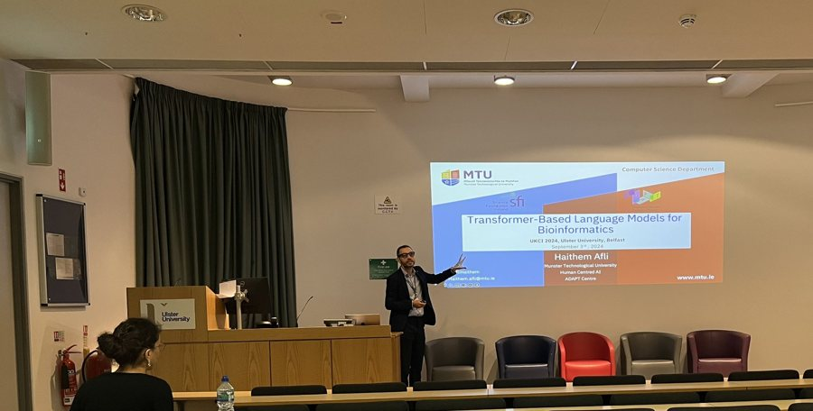
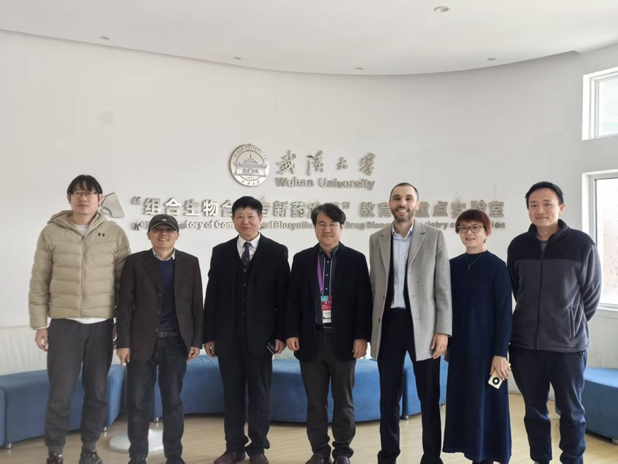
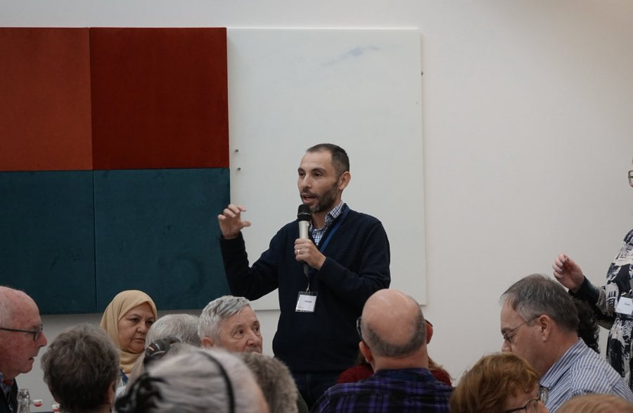
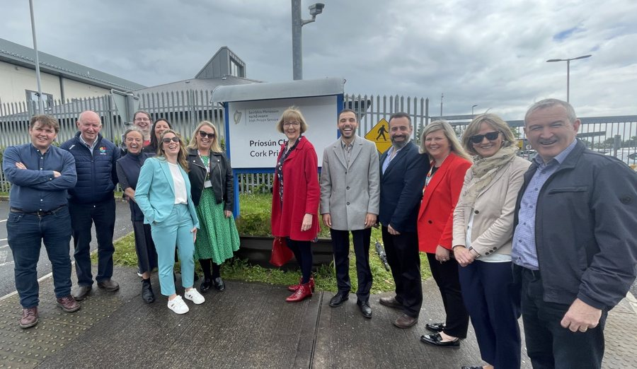
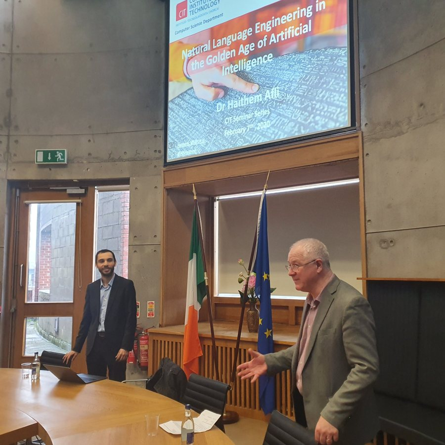
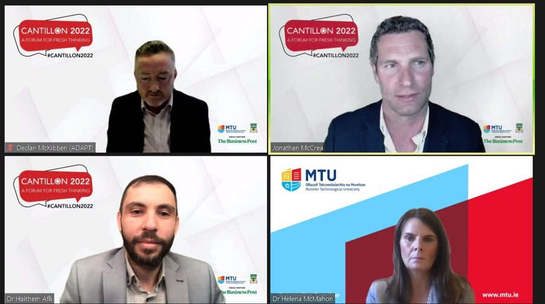
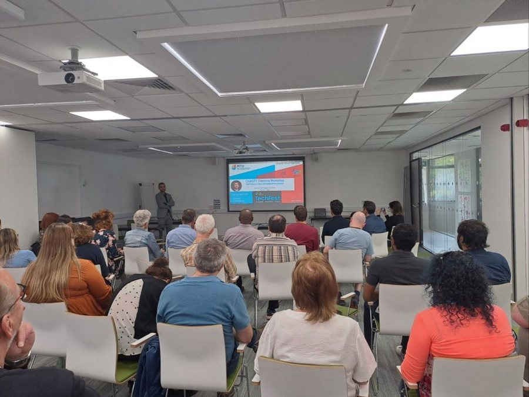

Bu sayfa, İngilizce özgün metnin yapay zekâ desteğiyle hazırlanmış ve otomatik dil bilgisi, yazım ve terim denetimi araçlarıyla kontrol edilmiş bir çevirisidir. Henüz anadili Türkçe olan biri tarafından gözden geçirilmemiştir; esas alınan sürüm İngilizce sürümdür. Bu sayfayı İngilizce okuyun
Konuşmalar ve Toplumsal Erişim
Seçilmiş davetli konuşmalar, ana konuşmalar ve toplumla etkileşim çalışmaları.








Seçilmiş konuşmalar
- The Language of Life: Large Language Models in Decoding Biological Data — Hologenomic Data Analysis Symposium, São Carlos, Brazil, 2024 (ana konuşma)
- Transformer-based models for bioinformatics (GenDAI) — UK Computational Intelligence Conference (UKCI), Ulster University, 2024 (davetli konuşmacı)
- Predictive Tools for Migration Management and Trustworthy AI — ITFLOWS Policy Workshop, Brussels (konuşmacı)
- General Chair — Political NLP Workshop @ LREC-COLING, Torino, 2024 (genel başkan)